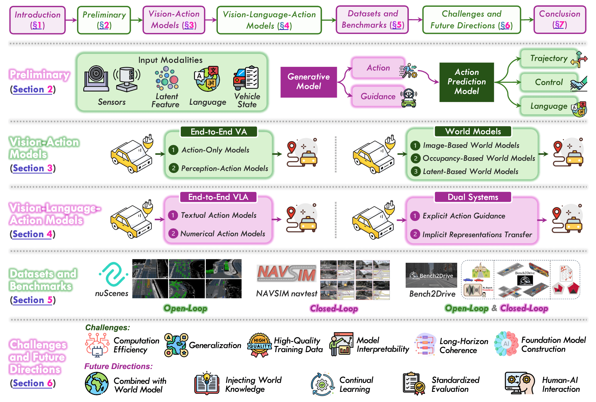

本リポジトリは、自動運転向けVision-Language-Action（VLA）モデルに関する包括的なサーベイを提供するAwesome Listである。初期の視覚・行動モデルから現代の統合フレームワークまでの進化を体系的にまとめている。サーベイ論文はarXiv:2512.16760として公開されている。
本リポジトリは研究を2つの主要パラダイムに整理している。
5つのサブカテゴリに分類されている。
出力タイプ別に整理されている。
視覚・行動向けおよびVLA専用のデータセットを別々のセクションで整理している。
実世界デプロイのシナリオとユースケースを収録している。
本サーベイは、自動運転が「認識→判断→行動」のモジュール型パイプラインを超えて進化してきたことを示している。モジュール型パイプラインはカスケードエラーにより複雑なシナリオでしばしば失敗する。現代のアプローチは、すべてのコンポーネントを統一ネットワークに統合するか、遅い推論と素早い実行を戦略的に分離する設計をとっており、大規模基盤モデルの能力を活用しながらも安全性の保証を維持している。
@article{vla4ad2024,
title={Awesome VLA for Autonomous Driving},
author={...},
journal={arXiv:2512.16760},
year={2024}
}